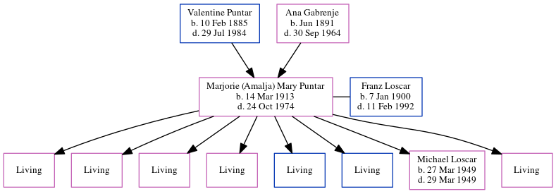

Marjorie Loscar (née Puntar) 1913 - 1974
[ Home ] | [ Calendar ] | [ Surnames Index ] | [ Census Index ] | [ Family History ]A seamstress in garment factory and the child of Valentine Puntar (a before he immigrated, valentine was a flax farmer. he wore an earring and was half gypsy) and Ana Gabrenje, Marjorie Puntar, the grandmother of Michele Copp (née Phillips), was born in Martinjak, Brezje, Slovenia on Mar 14, 19131,2,3,4,5 and married Franz Loscar (with whom she had 8 children: Sylvia Ann, Frances Rose, Nancy Carol, Marie Ellen, Francis Joseph jr, Edward Anthony, Michael and Linda Louise, along with 7 surviving children) in Tucker, West Virginia, USA in 19367.
During her life, she was living in Davis, Tucker, West Virginia in 19301 and in 19352 (the same place as her parents had been living in 1930); and in Davis, West Virginia in 19402 and in 19503. On Aug 8, 1928 she arrived in New York, New York. She traveled from Le Havre, France.
She died on Oct 24, 1974 in Elkins, , West Virginia5,6 and was buried in Thomas, Tucker County, West Virginia after Oct 24, 19745.
Parents
- Valentine was born on Feb 10, 1885
- Ana was born in Jun 1891
Children
- Michael was born on Mar 27, 1949
Citations
- 1930 United States Federal Census Online publication - Provo, UT, USA: MyFamily.com, Inc., 2002.Original data - United States of America, Bureau of the Census. Fifteenth Census of the United States, 1930. Washington, D.C.: National Archives and Records Administration, 1930. T626, 2,667 rol
- 1940 United States Federal Census Ancestry.com Operations, Inc. (Marital Status: Married; Relation to Head: Wife)
- 1950 United States Federal Census Ancestry.com Operations, Inc. (Department of Commerce. Bureau of the Census. 1913-1/1/1972. Population Schedules for the 1950 Census, 1950 - 1950. Washington, DC: National Archives at Washington, DC. Population Schedules for the 1950 Census, 1950 - 1950. NAID: 43290879. Records of the Bureau of the Census, 1790 - 2007, Record Group 29. National Archives at Washington, DC., Washington, DC.) (Relation to Head: Wife; Marital Status: Married)
- New York Passenger Lists, 1820-1957 Online publication - Provo, UT, USA: The Generations Network, Inc., 2006.Original data - Passenger Lists of Vessels Arriving at New York, New York, 1820-1897; (National Archives Microfilm Publication M237, 675 rolls); Records of the U.S. Customs Service, R
- U.S., Find A Grave Index, 1600s-Current Ancestry.com Operations, Inc.
- OneWorldTree Online publication - Provo, UT, USA: MyFamily.com, Inc.
- West Virginia, Marriages Index, 1785-1971 Ancestry.com Operations, Inc.
Family Tree
Generated by ged2site. Last updated on Jun 6, 2024